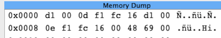

|
Debugging Programs |
The Pep/9 system provides debugging tools to help you locate errors in the programs you write. The tools include the CPU display, a memory dump, tracing machine code, tracing assembler code, break points, and a symbolic trace feature. If you are debugging a machine language program that you wrote you can use the memory dump feature but you cannot set break points or use the symbolic trace feature. You can use all the debugging features if you are debugging an assembly language program. An additional debugging tool is the byte converter, which is available any time the application is running.
Topics: The CPU display, The memory dump, Tracing machine code, Tracing assembler code, Break points, Symbolic trace, Byte converter.
The screenshot of the Program Trace below highlights the ASRA instruction at 0012.
This statement has not yet executed.
The screenshot of the CPU display below shows the state of the processor just after the ADDA instruction at 000F has executed.

The CPU pane shows the values of the NZVC bits and of each register in the CPU.
It displays the content of the accumulator, index register, stack pointer, and program counter first in hexadecimal and
then in decimal.
In the above screenshot, the accumulator has a decimal value of 152, the result of adding 68 for exam1 and 84 for exam2.
The CPU display shows the instruction specifier first in binary, and then as a mnemonic.
If the instruction is nonunary, it decodes the addressing mode field and shows the corresponding letter for the addressing mode
after the mnemonic, and displays the operand specifier.
In the above screenshot, the mnemonic is ADDA, and the addressing mode letter is s for stack-relative addressing.
The operand specifier is 2.
The operand is not part of the CPU, except for the case of immediate addressing when the operand is the operand specifier. However, for the convenience of the programmer, the CPU pane computes the value of the operand from the addressing mode and displays it as well. The Operand field in the CPU pane is enclosed in parentheses to emphasize the fact that it is not part of the CPU. In the above screenshot, the operand is 84, the decimal value that was just added to the accumulator.
The values in the CPU pane are the values after the instruction in the instruction specifier has executed.
For example, the values in the above screenshots are the values after the ADDA at 000F executes.
In the von Neumann cycle, the program counter increments before the instruction executes.
So, the value of the program counter is the address of the next instruction to execute.
In the above screenshot, the program counter is 0012, which is the address of the next instruction to execute,
while the instruction that just executed is the instruction at address 000F.


The Pep/9 application may run noticibly slower when the Memory Dump pane is visible. You can click either of the other two view icons to hide the Memory Dump pane.

Each row of the memory dump pane displays eight contiguous bytes of memory and has three parts.

The first part shows the address of the first byte in the row. The second part shows a list of eight bytes, each one displayed as two hexadecimal digits. In the above figure, 0008 is the address of 0E, the first byte of the row. Byte F1 is at address 0009, byte FC is at address 000A, and so on.
The third part in the memory dump pane shows the ASCII representations of the eight bytes in the row.
Some bytes in a memory dump are generated from ASCII strings, and are meaningeful when interpreted as such.
For example, in the above figure bytes 48 and 69 at addresses 000D and 000E are displayed in the third part as
letters H and i.
Most bytes in a memory dump are not generated from ASCII strings, and are meaningless when interpreted as such.
In the above figure, byte F1 is displayed as an accented n.
When a byte represents a nonprintable ASCII control character, it is shown as a period.
You can scroll to any location in memory using the scroll bar on the right. To scroll to a specific memory location enter the address in hexadecimal in the input field at the bottom of the pane. Click the SP button to scroll to the region of memory pointed to by the stack pointer. Click the PC button to scroll to the region of memory pointed to by the program counter.

up.


Then select Debug→Start Debugging Object from the menu. The Start Debugging Object action does three things — clears memory to all zeros, loads the machine language program into memory starting at address 0000, and puts you in the debugging mode.

At the beginning of the trace, the program counter (PC) is set to 0, indicating that the next instruction to be fetched is the one in memory at address 0000. The memory dump highlights in blue the machine language instruction, in this example D1 FC15.


The debugger will perform one von Neumann cycle.
Namely, it will fetch the instruction, decode it, increment PC, and execute the instruction fetched.
In this example, the instruction D1 loads a byte from the input port FC15 into the accumulator.
Because u is the first character in the input stream, the instruction puts its hexadecimal equivalent
0x75 in the right half of the accumulator.
At this point, the CPU pane shows the instruction specifier D1 in binary and the operand specifier FC15
in hexadecimal.
This is the instruction that was fetched and executed.
The value of PC is the incremented value, which points to the instruction that will be executed next.
The memory dump highlights the instruction that will be executed next, not the instruction that was
just executed.

The following figure shows the state of the machine after one more single step. Instruction F1 0013 is the store byte instruction. It stores the right half of the accumulator to memory location 0013. The memory dump pane highlights in red that part of memory that was changed by the instruction. The highlighted instruction in the memory dump, D1 FC15, is the instruction that will execute next.

If you want to terminate the debugging session without running the program to completion, select Debug→Stop Debugging from the menu or click the stop sign icon in the tool bar.


Select Debug→Start Debugging from the menu, or click on the icon with the bug in the tool bar. The Start Debugging action does three things — clears memory to all zeros, assembles and loads the source program, and puts you in the debugging mode.


The following sequence of figures shows the tracing steps when debugging the program of Figure 6.4 with values 68 84 in the input stream.

The Start Debugging action activates the Debugger tab, which displays the Program Trace.
The Program Trace shows the assembly language source code with the statement to be executed next highlighted in blue.
With this program, the BR main instruction is about to execute.

The debugger will perform one von Neumann cycle.
Namely, it will fetch the instruction, decode it, increment PC, and execute the instruction fetched.
In this example, the branch instruction uses immediate addressing to put 0003 into PC.
At each step of the trace you can also see the content of the CPU.
At this point, the CPU pane shows the instruction specifier for BR in binary and the operand specifier 0003
in hexadecimal.
This is the instruction that was fetched and executed.
The value of PC is the address of the instruction that will be executed next, in this case the SUBSP instruction.
The program trace highlights the instruction that will be executed next, not the instruction that was
just executed.


The following figures show the Program Trace and CPU after another single step, which executes the SUBSP instruction.
The CPU shows the SUBSP instruction in the instruction specifier and 6 in the operand specifier.
This is the instruction that was just executed.
Also shown is the rendering of the run-time stack in the Memory Trace.
The program trace highlights the DECI instruction, which will be executed next.


Now the DECI instruction is about to execute.
But, DECI is a trap instruction, which generates a trap to the operating system.
Therefore, you have two trace options — (1) single step the trap instruction, or (2) step into the trap instruction.
DECI trap instruction and then show the state of the computer as if DECI were a single instruction.
The Program Trace below highlights the second DECI instruction, because that is the instruction
that will be executed next.
The Memory Trace shows that the DECI instruction input the value 68 to exam1 on the run-time stack.
The instruction specifier in the CPU shows that the last instruction executed is RETTR,
which stands for "return from trap".
This is the instruction in the operating system that returns control to the application.


The Memory Dump pane also highlights the top byte of the stack in magenta.
The following screenshot show the stack starting at address FB89.
The DECI instruction stored 0044(hex) = 68(dec) at address FB8D on the run-time stack.

DECI
instruction, you can choose the second trace option.
Select Debug→Step Into from the menu or click on the corresponding icon in the tool bar.


The Program Trace pane switches to the operating system.
When a trap instruction executes, control is transferred to the trap handler of the OS.
The first instruction of the trap handler to execute is the LDBX instruction at FC52.


DECI.
Eventually, you will execute RETTR, the return from trap instruction.
The Program Trace pane will switch back to the application and highlight the instruction after the one that caused the trap.
If you are part way through tracing the trap handler and want to immediately return to the application,
select Debug→Step Out from the menu or click on the corresponding icon in the tool bar.


The debugger will automatically execute all the remaining statements of the code you are tracing up to,
and including, the next RETTR or RET instruction.
You will then be ready to single step through the remaining statements of the application.


If you want to terminate the debugging session without running the program to completion, select Debug→Stop Debugging from the menu or click the stop sign icon in the menu bar.
call instruction, it is possible to bypass
all the statements inside the function.
For example, susppose you trace the main program in Figure 6.25 of the textbook up to the CALL at 007D.
The SUBSP statement that just executed has pushed storage for retVal
and parameters n and k onto the run-time stack.


If you do not want to trace all the code of the function but just want to know the state of the computation after the function returns, select Debug→Step Over from the menu or click the corresponding icon in the menu bar.


The debugger will execute all the statements of the function up to and including the RET statement
that corresponds to the CALL.
In the following figure, the function has computed the value of retVal, which the main program will output.


The Step Over operation works on a CALL instruction the same way the Single Step operation works
on a trap instruction.
In both cases, the debugger executes all the code of the trap or call as if it were a single instruction at
a higher level of abstraction.
Step Over
CALL instructionCALL instructionCALL instructioncall or trap instructionCALL instruction.
See the menu for the keyboard shortcut on your system for the Single Step operation.
Hello, world!*.


The gray strip on the left of the listing is the break point area.
If you click in the break point area next to an executable statement, a red circle will appear to indicate that the statement has a break point.
In the above figure, break points have been set for the LDBA instruction at 000A and the LDBA instruction at 0019.
To remove a break point click the red circle.
To execute all the statements up to the next break point, select Debug→Continue Debugging from the menu or click on the corresponding icon in the tool bar.
The following figure shows that all the statements up to but not including the one at 000A have executed.
The previous instruction STBA put the letter H in the global variable letter at 0003.
At this point, the statement to be executed is the statement at the top of a while loop.


The next figure shows the debugger after one more Continue Debugging operation.
The debugger executed the statements in the body of the while loop.
The debugger did not stop at the second break point because that break point is on an instruction in a nested if
statement that did not execute.
The previous statement that executed was the BR instruction at 002B.
The memory trace shows the value of e stored to letter by the STBA instruction at 0028.

# character and supplies information to the symbol tracer on how to format
and label the memory cell in the trace window.
If your program does not include trace tags, the memory trace pane will not be visible when you run your program. You can still use the debugger to single-step through your program and set break points. If it does include trace tags, but errors are detected in the tags, a blue warning will be issued. You can still run your program and use the debugger, but the memory trace pane will not be visible. The screenshot below shows what happens if you make an error in one of the trace tags in the program from Figure 5.27.

If your program does include trace tags and they have no errors, the memory trace will automatically become visible
below the listing trace pane.
As you single-step through the program, you can see the global variables on the left, and the run-time stack on the right.
Here is a screenshot of the memory trace pane from the program in Figure 6.21.
The memory cell for k on top of the run-time stack is colored red because a STWA
instruction has just changed its value.

The sybolic trace feature also displays the fields of a global struct,
and storage from the heap allocated with a call to malloc.
Here is a screenshot of the memory trace pane from the program in Figure 6.48.
The stack on the left contains the local variables, and the heap on the right contains the dynamically allocated variables.
The program has just executed a call to malloc, which has allocated a new node shaded green
with fields data and next.

See the textbook for information on how to use trace tags in your programs.
P in the ASCII field.

An instruction specifier decoder is to the right of the four input fields. It displays the instruction mnemonic and possibly the addressing mode assuming you interpret the byte value as an instruction specifier.